Diga a senha para entrar em Mystic Falls.
O visitante pode experimentar tudo. Os pontos zeram ao sair.
Abrindo a Escola de Magia...
Leia em voz alta tudo o que está no quadro e repita 5 vezes seguidas. A cada vez, toque em "Falei!".